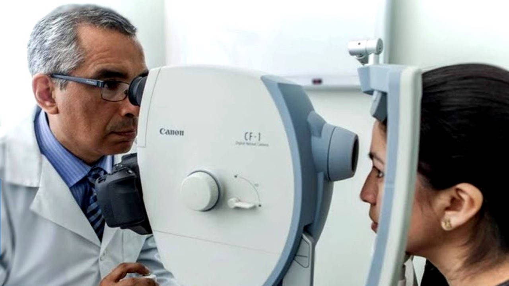

¿Quiénes somos?
Somos la Clínica Árbol de Seda, un centro médico comprometido con la salud integral de nuestros clientes. Desde nuestra fundación, nos hemos dedicado a proporcionar atención médica de alta calidad que abarca tanto el aspecto físico como el mental. Nuestro objetivo es brindar un ambiente acogedor y seguro donde cada individuo se sienta escuchado y apoyado en su camino hacia una vida más saludable. Contamos con un equipo de profesionales altamente capacitados y compasivos que trabajan incansablemente para ofrecer un cuidado personalizado y centrado en las necesidades únicas de cada paciente. En la Clínica Árbol de Seda, creemos que la salud no se trata solo de tratar enfermedades, sino de promover el bienestar en todos los aspectos de la vida. Por ello, ofrecemos una amplia gama de servicios que incluyen desde consultas médicas generales hasta terapias complementarias como la acupuntura, la meditación y la terapia de grupo. Nos enorgullece ser una clínica que se preocupa profundamente por el bienestar de nuestros clientes y estamos comprometidos a seguir siendo un apoyo confiable y una fuente de sanación en nuestra comunidad.
Servicios disponibles
-

- 